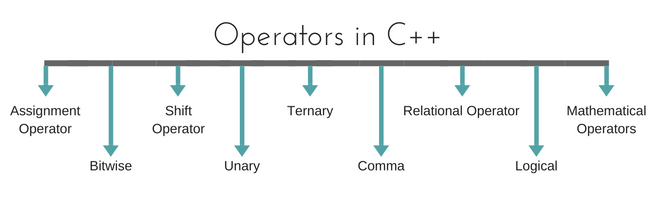

OPERATORS In C++Programming
operaters
Operators are special type of functions, that takes one or more arguments and produces a new value. For example : addition (+), substraction (-), multiplication (*) etc, are all operators. Operators are used to perform various operations on variables and constants.
Types of operators
- Assignment Operator
- Mathematical Operators
- Relational Operators
- Logical Operators
- Bitwise Operators
- Shift Operators
- Unary Operators
- Ternary Operator
- Comma Operator
Assignment Operator ( = )
Operates '=' is used for assignment, it takes the right-hand side (called rvalue) and copy it into the left-hand side (called lvalue). Assignment operator is the only operator which can be overloaded but cannot be inherited.
Mathematical Operators
There are operators used to perform basic mathematical operations. Addition (+) , subtraction (-) , diversion (/) multiplication (*) and modulus (%) are the basic mathematical operators. Modulus operator cannot be used with floating-point numbers.
C++ and C also use a shorthand notation to perform an operation and assignment at same type.
Example,
int x=10; x += 4 // will add 4 to 10, and hence assign 14 to X. x -= 5 // will subtract 5 from 10 and assign 5 to x. |
Relational Operators
These operators establish a relationship between operands. The relational operators are : less than (<) , grater thatn (>) , less than or equal to (<=), greater than equal to (>=), equivalent (==) and not equivalent (!=).
You must notice that assignment operator is (=) and there is a relational operator, for equivalent (==). These two are different from each other, the assignment operator assigns the value to any variable, whereas equivalent operator is used to compare values, like in if-else conditionsExample
int x = 10; //assignment operator
x=5; // again assignment operator
if(x == 5) // here we have used equivalent relational operator, for comparison
{
cout <<"Successfully compared";
} |
Logical Operators
The logical operators are AND (&&) and OR (||). They are used to combine two different expressions together.
If two statement are connected using AND operator, the validity of both statements will be considered, but if they are connected using OR operator, then either one of them must be valid. These operators are mostly used in loops (especially while loop) and in Decision making.
Bitwise Operators
There are used to change individual bits into a number. They work with only integral data types like char, int and long and not with floating point values.
- Bitwise AND operators &
- Bitwise OR operator |
- And bitwise XOR operator ^
- And, bitwise NOT operator ~
They can be used as shorthand notation too, & = , |= , ^= , ~= etc.
Shift Operators
Shift Operators are used to shift Bits of any variable. It is of three types,
- Left Shift Operator <<
- Right Shift Operator <<
- Unsigned Right Shift Operator <<<
Unary Operators
These are the operators which work on only one operand. There are many
unary operators, but increment ++ and decrement -- operators are most used.
Other Unary Operators :
address of &, dereference *, new and delete, bitwise not ~, logical not !, unary minus - and unary plus +.
Ternary Operator
The ternary if-else ? : is an operator which has three operands.
int a = 10; a < 5 ? cout << "true" : cout << "false" |
Comma Operator
This is used to separate variable names and to separate expressions. In case of expressions, the value of last expression is produced and used.
Example :
| int a,b,c; // variables declaration using comma operator a=b++, c++; // a = c++ will be done. |